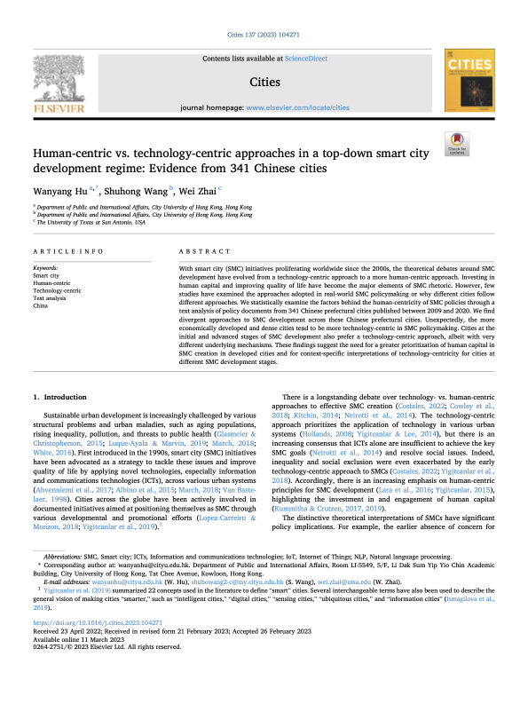
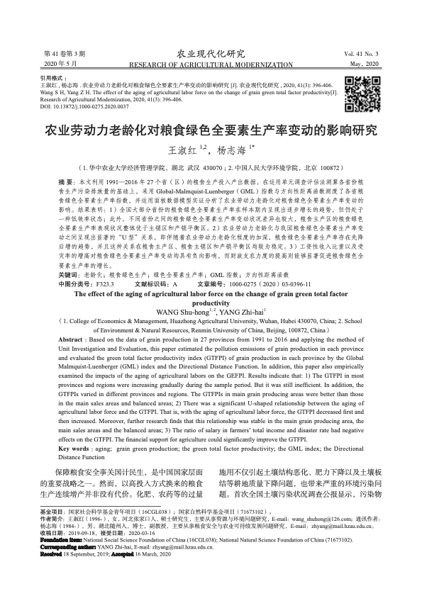

I am a Ph.D. Candidate in the Department of Public and International Affairs at City University of Hong Kong, under the supervision of Prof. Wanyang Hu. My research broadly examines the social determinants of health and well-being, with a particular focus on aging populations, long-term care systems, migration and social integration, and smart city development. I employ quantitative methods and big data analysis to inform evidence-based public policy research.
I successfully defended my Ph.D. dissertation in June 2026 and am actively exploring academic and professional opportunities. I warmly welcome inquiries regarding collaboration, research exchange, or job opportunities. Please feel free to contact me via email.
* Corresponding author





